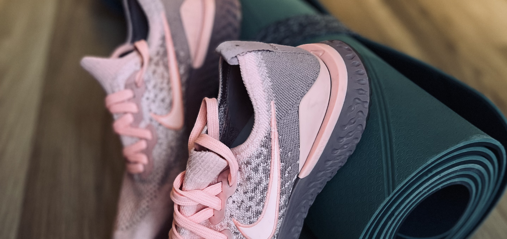

Szerencse Ágnes gyógytornász, manuálterapeuta vagyok.
A célom az, hogy a pácienseim saját környezetben, nyugodt helyen, akár egy hozzátartozójuk bevonásával tudják végezni a gyógytornát otthonukban.
2011-ben végeztem a Semmelweis Egyetem Egészségtudományi Karán gyógytornászként. Kezdetben kórházban dolgoztam, rehabilitáción, traumatológián, járóbeteg-szakellátáson és gyerekosztályon. Ezt követően elkezdtem kijárni házhoz a páciensekhez.
Mivel gyakran kerestem fel a pácienseimet az otthonukban, rengeteg időt töltöttem az autómban, aminek köszönhetően nyaki gerincsérvem alakult ki. Ekkor kezdtem el mélyebben tanulmányozni a gerincproblémákat. Azelőtt jellemzően műtét utáni gyógytornával, sportsérüléseket követő rehabilitációval, nyiroködéma kezelésével és sztrókosokkal foglalkoztam, amit természetesen a mai napig folytatok, ám a szakmai tevékenységem már a különféle gerincproblémák kezelésére is kiterjed. Hogy a tudásomat elmélyítsem, először elsajátítottam a McKenzie-módszert, majd az ADT-t (autodekompressziós terápia) – a tapasztalataim alapján mindkettőt rendkívül eredményesnek tartom. Mivel a mozgásszervi problémák megelőzésén és kezelésén túl az utógondozás is kiemelten fontos számomra, megtanultam az APPI (rehabilitációs) pilatest is, hogy a már tünetmentes pácienseimmel is tudjak foglalkozni.
Budapesten, elsősorban a budai kerületekben házhoz megyek, rendelői gyógytornán pedig a XI. kerületben fogadom a pácienseimet.
Kezelések
Komplex nyiroködéma-kezelés
kézi nyirokdrenázs vagyis a szövetek között megrekedt folyadék távozásának manuális segítése, fáslizás és gyógytornaKinesio tape (kineziológiai tapasz)
egy speciális, pamutból készült szalagot ragasztunk a bőrre, amely fokozza a keringést, stabilizál, és segíti az izommunkát. A szalag nem vált ki allergiás reakciót.Flossing terápia
egy speciális gumiszalaggal nyomást hozunk létre a problémás területen. A technika a szivacselv alapján működik, vagyis szorításkor lelassítjuk a vérkeringést, ami a szalag levétele után hirtelen felgyorsul, ezáltal a kezelt területről gyorsabban távozik az ott felgyülemlett folyadék. Hatásos kezelés ödémára, az izmok letapadására, fájdalomcsillapításra és a mozgástartomány növelésére.Manuálterápia
kézzel végzett technika, amellyel a mozgásrendszer visszafordítható elváltozásait állítjuk helyre.ADT (autodekompressziós terápia)
ez a módszer egy magyar kolléga, Bene Máté nevéhez fűződik. Célja a gerincsérv műtét nélküli gyógyítása és az, hogy az érintett páciensek a lehető legrövidebb idő alatt visszanyerjék a mozgás szabadságát. Fontos, hogy ez egy úgynevezett oki terápia, vagyis a segítségével nem a tüneteket, hanem az azokat kiváltó okokat szüntetjük meg. Érdemes tudni, hogy a régi, helytelen mozgásminták helyett gyakorlással új, helyes minták építhetők be, ezáltal megelőzve a panaszok kiújulását.APPI pilates
ez egy ausztrál módszer, amelyet gyógytornászok hoztak létre. Célja a normális funkcionális mozgás elérése, a megfelelő mozgásminták újratanulása. A módszer a hagyományos pilates gyakorlatokat elemeire bontva.segíti az erős, stabilizáló mélyizomstruktúra kialakítását. Ajánlott izomrehabilitációs és prevenciós célra, krónikus fájdalmak esetén vagy sportsérülések után.McKenzie-módszer
ez egy speciális vizsgálati és kezelési módszer, amelyet Robin McKenzie új-zélandi gyógytornász dolgozott ki. Elsősorban a mechanikai eredetű gerincproblémák, leggyakrabban a gerincsérv kezelésére alkalmas.Schroth-terápia
ezt a módszert Katharina Schroth német gyógytornász alkotta meg, a lényege pedig az, hogy három dimenzióban, az oldalirányú görbületeket korrigálva, a gerinc nyújthatóságát kihasználva és a helyes légzéstechnikát alkalmazva kezeljük a gerincet. Árak
Otthon
Rendelőben
Milyen esetekben javasolt a gyógytorna?
- mozgásszegény életmód
- ülőmunka
- mozgásszervi problémák
- sportsérülés
- tartáshiba, hanyag tartás, gerincferdülés
- állóképesség fejlesztése
- egyensúlyproblémák, esésmegelőzés
- porckorongsérv
- derékfájdalom, hátfájás, nyakfájdalom
- ízületi kopások
- mozgásbeszűkülés
- izomgyengeség
- műtét utáni gyógytorna
- csontritkulás
- sztrók utáni rehabilitáció